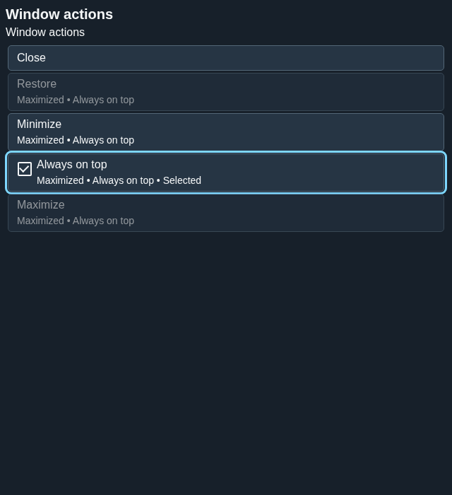
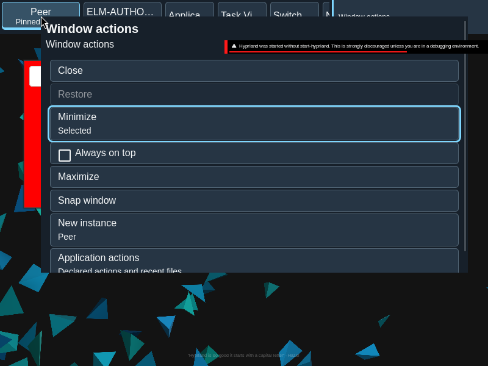

Window menu
The window menu exposes actions supported for the selected window.
Overview
The window menu exposes actions supported for the selected window.
Anatomy
Menu items are derived from the target and its admitted capabilities, with checked state where applicable.
The menu is an ordered set of capability-bound menu items. A checkable action such as Always on top exposes its checked value independently of keyboard focus.
States
Unavailable actions stay unavailable; Always on top can show a checked state. Pending and unknown outcomes do not imply success.
- Enabled: the captured target and capability admit the action.
- Unavailable: an action cannot be invoked.
- Checked: the current toggle value is exposed on the menu item.
- Pending or unknown: feedback is distinct from a confirmed window state.
Specimen
Real Elm interface. Simulated desktop. Client window interiors are fixtures. Load the desktop only when you want to explore this component.
Open the full desktop scenario
Related archived specimens: Frozen v6 menu, Frozen v6 menu-item. Frozen v6 is an archival reference.
Behavior
Invoke the context menu and choose an enabled action. The menu uses captured target authority and closes when an action is dispatched.
Invoke the context menu for a window or group, then choose an admitted action. In the menu, Up and Down move between items; Home and End reach the first and last. Escape dismisses it. New instance appears only where the application supports it.
Accessibility
Keyboard navigation and descriptive action names make the menu usable without a pointer. Checked state is exposed semantically.
Content
Use capability-bound labels and retain the source outcome wording. New instance is offered when supported.
Name the operation and retain its checked or unavailable state. A request to change Always on top is not itself evidence that the window has changed.
Evidence
Unmodified captures of the running interface record the states below.


Try it
Explore window menu in context on the simulated desktop.